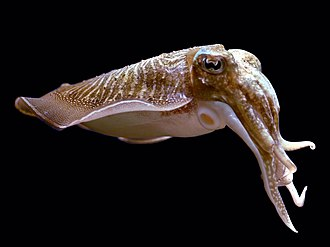
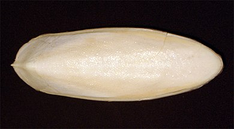
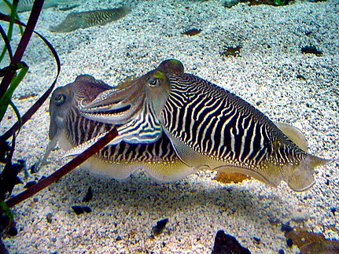
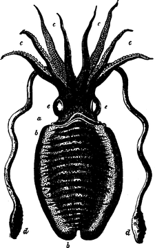

The common cuttlefish or European common cuttlefish (Sepia officinalis) is one of the largest and best-known cuttlefish species. They are a migratory species that spend the summer and spring inshore for spawning and then move to depths of 100 to 200m during autumn and winter.[2] They grow to 49 cm in mantle length (ML) and 4 kg in weight.[3] Animals from subtropical seas are smaller and rarely exceed 30 cm in ML.[4]
The common cuttlefish is native to at least the Mediterranean Sea, North Sea, and Baltic Sea, although subspecies
have
been proposed as far south as South Africa. It lives on sand and mud seabeds and it can tolerate brackish water
conditions.
Cuttlefish only have a lifespan of 1–2 years (captive and wild) and have many predators including sharks, dolphins, seals, fish, and cephalopods which includes other cuttlefish.[5] They have many defensive mechanisms to help protect them from predators including a siphon which they can use to shoot water out of to propel them away from danger, ink which can distract and disorient a predator as the cuttlefish escapes, and their camouflage abilities which can help them avoid predators altogether.[6]
During the day, most cuttlefish can be found buried below the substrate and fairly inactive. At night however, they are actively searching for prey and can ambush them from under the substrate. Cuttlefish are carnivorous and eat a variety of organisms including crustaceans (crabs and shrimp), small fish, molluscs (clams and snails), and sometimes other cuttlefish which is more commonly seen when the abundance of other prey is low.[5]
The common cuttlefish is one of the largest species of cuttlefish with their mantles (does not include their head and arms) reaching upwards of 45 cm. The mantle houses the reproductive and digestive tracts of the cuttlefish and is also home to an internal shell called the cuttlebone.[2] The common cuttlefish has two highly developed eyes, eight arms which are located around the mouth and are used to hold and move prey, two tentacles which are used to quickly capture prey, and a radula which is used to tear and rip apart any prey they have captured.[5] Cuttlefish are well known for their unmatched camouflaging abilities which are possible due to light scattering leucophores, pigmented chromatophore organs, and structurally reflecting iridophores all located in their skin.[9] These specialized characteristics give them the ability to not only change their colour, but also change the texture appearance of their skin and all of this is done despite them being colour-blind. Their camouflaging abilities are categorized into four main types including mottle, stipple, uniform, and disruptive.[10] These complex camouflage abilities are not just present in adult cuttlefish, but cuttlefish juveniles also have these complicated characteristics, which allows them to be able to camouflage from a young age.[11]
Cuttlefish reach sexual maturity between 14 and 18 months of age. During breeding season, which occurs during spring and summer in shallow waters, male cuttlefish will display a black and white zebra pattern on their mantle to attract females and females will display a uniform grey colour to indicate they are ready to mate. Cuttlefish are internal fertilizers and the number of fertilized eggs can range from 100 to 1000. After the eggs are fertilized, they will remain in the oviduct of the female for anywhere between 30 and 90 days before they are laid.[2] The eggs attach to seaweed, shells, or other substrates to prevent them from drifting away and have ink deposits on them to aid in camouflage.[1]
epia officinalis is a species that is commonly fished in the Mediterranean, including countries like Greece and Spain. Although it is fished extensively and wild stocks in some regions are close to being over-exploited, population numbers are not declining so the species is of Least Concern on the list of threatened species.[1] Cuttlefish have many uses, which makes them a popular catch. Their cuttlebones are commonly sold in the pet bird industry because they provide a good source of calcium, help keep a bird's beak trimmed, improve jaw strength, and provide entertainment for the bird.[12] Sepia officinalis is also growing in popularity as a foodstuff because it has a similar taste to octopus and squid and is a good source of healthy proteins and lipids.[13] Cephalopod ink is believed to have many beneficial health effects including anti-inflammatory and anti-oxidant activity, antimicrobial and potential anticancer properties, and anti-hypertensive and anti-retroviral activity.[14] Other uses for cephalopod ink include writing, drawing, and painting uses along with potential cosmetic uses. Similar to cuttlefish meat, the ink is also commonly used in the food industry for both its flavor and as a food dye.[14]
The zebra striped pattern male cuttlefish display during breeding season
It is unknown where the type specimen of S. officinalis was collected, as the location is given simply as "Oceano". It is deposited in the Linnean Society of London.,[15] Sepia officinalis jurujubai Oliveira, 1940, originally described as a subspecies of the common cuttlefish, is a junior synonym of Sepioteuthis sepioidea.[16] It is unknown where the type specimen of S. officinalis was collected, as the location is given simply as "Oceano". It is deposited in the Linnean Society of London.[15] Sepia officinalis jurujubai Oliveira, 1940, originally described as a subspecies of the common cuttlefish, is a junior synonym of Sepioteuthis sepioidea.[16]
As seen when dead, the long prehensile tentacles being withdrawn from the pouches at the side of the head, in which they are carried during life when not actually in use. a, neck; b, lateral fin of the mantle; c, the eight shorter arms; d, the two long prehensile tentacles; e, the eyes